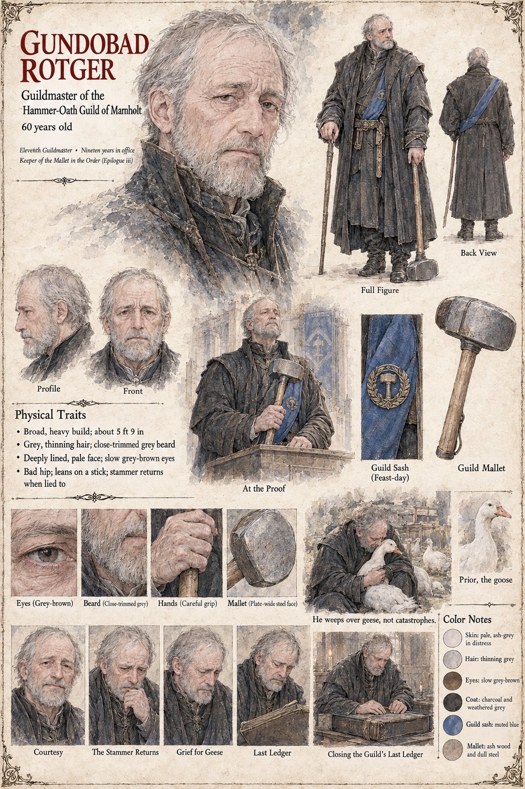

Gundobad Rotger
Eleventh Guildmaster of the Hammer-Oath Guild of Marnholt · nineteen years in office · Keeper of the Mallet in the Order · 60 years old
The Guildmaster of the Hammer-Oath Guild: a broad, heavy man of sixty with grey thinning hair, a close-trimmed grey beard, a deeply lined pale face, slow grey-brown eyes and a bad hip that has him leaning on a stick, whose stammer, the sheet says, returns when he is lied to. It counts him the Eleventh Guildmaster, nineteen years in office, and draws him at the Proof with the Guild's mallet, a plate-wide steel face on an ash-wood haft, and in the muted-blue sash of the feast-day. The other pages give him less than the sheet does. Ruodhard's page has the old Proof-keeper serve the Guild before Gundobad Rotger takes the mallet; Ansbert's has him offer the smith the mastery, a house in the Middle Town and the forge rebuilt in stone in return for the method; Wolfram's has the eleven masters vote seven to four to lay the Low Forge before the Hierarch as a case of sorcery, with the Guildmaster refusing to cast his own.
The sheet's own lines are about geese. Its caption He weeps over geese, not catastrophes sits under a scene of him crouched in a yard with a white goose held to his chest among others of its kind, and a small portrait labelled Prior, the goose introduces Prior, who has a sheet of her own and who was hatched in the Guildhall yard the spring his master took the mallet. The last scene, Closing the Guild's Last Ledger, draws him at a desk with both hands flat on a closed book; Nailer's page has Sigebert Marl staying behind to wind up the Guild's books on the day it adjourns, and this page does not say how the two scenes fit. A line on the sheet gives him a later office, Keeper of the Mallet in the Order (Epilogue iii); the Order is presumably the Order of the Hundred and Forty-Four. The Boy with the Cracked Knife brings his knife to a retired Guildmaster to ask whether it is Whole; the publication notes set that scene in Chapter 10, where the Guild closes, and the retired Guildmaster is presumably this one, though the sheet's old man has a long white beard against this man's close-trimmed grey.
His expression panels run Courtesy, The Stammer Returns, Grief for Geese and Last Ledger. Written from the sheet, from what the other Case 4181 pages already say, and from the character notes in the case's publication-prep file; the manuscript itself was not to hand. His age of 60, broad heavy build of about 5 ft 9 in, pale ash-grey skin that goes greyer in distress, grey-brown eyes, charcoal and weathered-grey coat and muted-blue sash are the sheet's own.
“He weeps over geese, not catastrophes.”